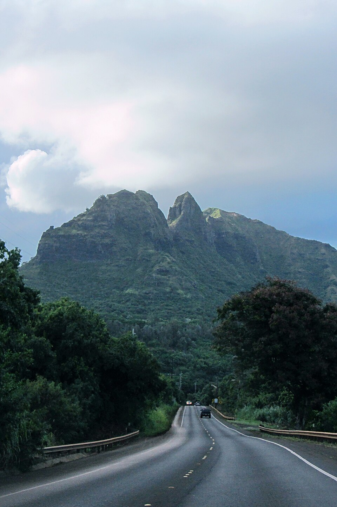

Anahola
Place: Anahola, Kauaʻi
Type: Ahupuaʻa / coastal community / Hawaiian homestead area
Namesake: Traditionally associated with Anahola, a shapeshifting moʻo (guardian spirit) said to inhabit the area; other interpretations of the name exist.
Story it tells: How an ancestral moʻo guardian gave its name to a coastal ahupuaʻa that later became an important center of Native Hawaiian homesteading, preserving connections between the community, its land, and its traditional moʻolelo.

Anahola, on the northeastern coast of Kauaʻi, takes its name, according to moʻolelo, from Anahola, a powerful moʻo guardian associated with the ahupuaʻa. In Hawaiian tradition, a moʻo is far more than a lizard. Moʻo are supernatural beings, sometimes understood as ancestral guardians or kupua (beings possessing extraordinary powers), often connected to freshwater, fishponds, streams, and other water-adjacent places. They can take different forms, including those of humans and enormous reptiles. Anahola was particularly unusual. According to local tradition, he appeared as a man while traveling on land but transformed into a merman when entering the waters of Anahola Bay. His presence connected the coastal waters and surrounding area to a guardian whose name became inseparable from the place itself.
Other explanations of the name Anahola have also circulated, although the linguistic origins remain uncertain. One interpretation divides the name into ana, meaning cave, and hola, referring to a traditional fishing practice in which plants were used to temporarily stun the fish for collection. Another tradition preserves a variant name Anehola, sometimes interpreted in connection with the breath of life or the hour of birth, reflecting spiritual associations with the area. Some modern references also translate Anahola as "deadly winds." These explanations should not necessarily be understood as competing literal translations. Hawaiian place names frequently preserve layers of genealogy, environmental knowledge, and moʻolelo that may not be explained by separating a name into individual words. The account of the moʻo Anahola remains an important traditional explanation connecting the name to its landscape.
Before the modern community developed, Anahola was a traditional Hawaiian ahupuaʻa extending from the upland forests toward the ocean. Its streams, lowlands, and coastal waters supported Hawaiian families through kalo cultivation, fishing, and other forms of agriculture and gathering. The Anahola River and its nearby freshwater environments also feature prominently in local moʻolelo. At Alaweo Pond near the river mouth, traditions describe another moʻo guardian, Pehuiki, and his three daughters, who watched over the waters and were sometimes seen along the banks combing their long hair. Their stories connect the health of the waterways to the spiritual responsibilities of their guardians. Following the Great Māhele of 1848, land use changed considerably. During the nineteenth century, Chinese farmers cultivated rice, while commercial sugar production expanded into the surrounding lands beginning in the late 1800s.
By the early twentieth century, Anahola supported a diverse agricultural community, including Japanese immigrant families who cultivated pineapple and other crops alongside sugar operations. Another transformation began with the Hawaiian Homes Commission Act of 1921, which designated acreage in Anahola for Native Hawaiian homesteading. Plantation leases delayed settlement on portions of these lands however and the first leases were awarded in Anahola in 1957. The community continued to expand through subsequent residential and agricultural homestead developments, including Piʻilani Mai Ke Kai. Today, Anahola remains one of Kauaʻi's important Native Hawaiian communities, where homesteading, agriculture, and cultural preservation continue to guide identity. Above the community rises the distinctive Kalalea Mountain, whose jagged peak is sometimes compared to King Kong. Beneath that familiar landmark, the name Anahola remembers a guardian of the area.